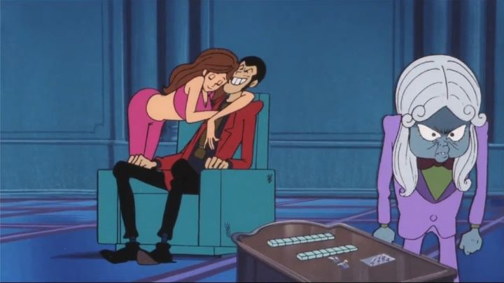

Lupin the Third has a long legacy in Japan, in the same way Inspector Gadget or James Bond do elsewhere. The first film he stared in was "The Mystery of Mamo." Despite its terrible name and the film's age, it's actually quite good. Not quite as good as "Castle of Caglisostro," but it comes closer than you think.The film starts with master-thief Lupin hanged. But Inspector Zenigata knows it's too easy, and sure enough find him alive and well. But Lupin doesn't know who his dead double was either, and seek the answer. Along the way, the beautiful Fujiko Mine thinks she finds a way to immortality from a mysterious wealthy individual named Mamo. The adventure is full of double-crossing, heroics, daring-do and surprises, and overall is quite fun to watch. It isn't the greatest story ever told, but is surprisingly entertaining, one of the better ones Lupin was involved in. Despite any typical issues with character stereotypes, it all fits with Lupin's attitude and still makes a good movie. Lupin and Fujiko's relationship is especially interesting. Zenigata is somewhat formulaic, to the point of confusion (his devotion to catching Lupin is baffling, when told that he has a family back home). Mamo himself looks too much like the short blue people in Akira (interestingly, the Akira movie was made after this), but otherwise makes a good villain. Violence isn't much too what most kids are used to, but Fujiko is naked for much of the film, so the nudity makes it older teens only.The visuals... this is an old film after all. It looks surprisingly good for its age, but still doesn't look much better than any animation made after 1990. It does look a bit like manga and children's drawings in some instances, which may be good or bad when you see it in motion. There are four english dubs, all with unique translations and voices, some of which change character names, some of which change lines of dialogue, some of which change tone of voice for a different feel. I personally like to 1994 Streamline dub best, but all dubs have their highlights, making it worth watching the film four times. Overall, "The Mystery of Mamo" is a fun film, and one of the better adventures you can find starring Lupin. And as the first film made, it also makes a good introduction to Lupin for newcomers.
- "Ani" More reviews can be found at : https://2danicritic.github.io/ Previous review: review_Lupin_the_Third_-_The_Fuma_Conspiracy Next review: review_Lupin_the_Third_-_The_Woman_Called_Fujiko_Mine